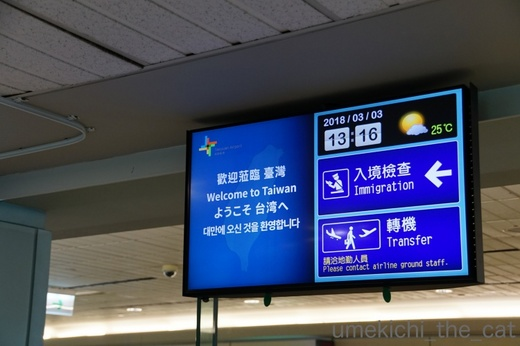
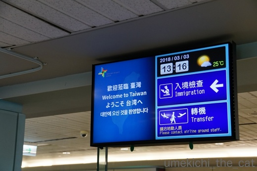

お留守番頑張りました [梅吉]
週末の梅吉さんは・・・・・

スリッパの足にかじりつく写真にピンときた方、いらっしゃるでしょうか。
そうです、梅吉さんはお留守番だったのです。
これはシッターさんの足にかじりついているところ(^▽^;)

ゴハンをもらって

遊びましょう♪と誘っても足にかじりついていたらしいです（汗）

あろうことかシッターさんの頭にもがぶりよる・・・
何事もなくてよかったー。シッターさんも「やられる」と一瞬思ったそうですw
今回の留守番は投薬もお願いしたかったので打ち合わせに来てもらいました。
梅吉は何度も会っているけど私がシッターさんに会うのは二度目。
直に留守番時の梅吉の様子を聞いて爆笑でしたー。
梅吉はシッターさんのニオイをふんふんかいだだけで大人しい。
「私に慣れてくれたかな、もうかじらないよね。梅吉くん」とシッターさんは言っていたのだけど・・・
やっぱり私がいないと襲われたそうですwww
それも元気な証拠よねーとあくまでも親バカな飼い主でした＾＾

![[猫]](https://blog.ss-blog.jp/_images_e/101.gif) つぎは わしも いっしょやで
つぎは わしも いっしょやで
と主張する梅吉さん。
 ↑ガブッと一押し↑
↑ガブッと一押し↑

一泊二日台湾の旅。まだ春節の雰囲気がありましたよー。
予想気温が25℃なのにお気づきでしょうか(^▽^;)
暑かった・・・
そして翌日は30℃。いやー、暑かった！！
次回は旅行記をアップしますね。
おそらく梅吉は登場しません。押し逃げ大歓迎ですよー＾＾

スリッパの足にかじりつく写真にピンときた方、いらっしゃるでしょうか。
そうです、梅吉さんはお留守番だったのです。
これはシッターさんの足にかじりついているところ(^▽^;)

ゴハンをもらって

遊びましょう♪と誘っても足にかじりついていたらしいです（汗）

あろうことかシッターさんの頭にもがぶりよる・・・
何事もなくてよかったー。シッターさんも「やられる」と一瞬思ったそうですw
今回の留守番は投薬もお願いしたかったので打ち合わせに来てもらいました。
梅吉は何度も会っているけど私がシッターさんに会うのは二度目。
直に留守番時の梅吉の様子を聞いて爆笑でしたー。
梅吉はシッターさんのニオイをふんふんかいだだけで大人しい。
「私に慣れてくれたかな、もうかじらないよね。梅吉くん」とシッターさんは言っていたのだけど・・・
やっぱり私がいないと襲われたそうですwww
それも元気な証拠よねーとあくまでも親バカな飼い主でした＾＾

と主張する梅吉さん。

一泊二日台湾の旅。まだ春節の雰囲気がありましたよー。
予想気温が25℃なのにお気づきでしょうか(^▽^;)
暑かった・・・
そして翌日は30℃。いやー、暑かった！！
次回は旅行記をアップしますね。
おそらく梅吉は登場しません。押し逃げ大歓迎ですよー＾＾

カフェオレ色の梅吉

梅吉 2023年8月10日 永眠


梅吉と出会った譲渡会

犬猫の理由なき殺処分ゼロ
妄想広告
UMEKICHI 光

爆発的に早い！
時々攻撃的！
Thanks to Mr.Boss365
爆発的に早い！
時々攻撃的！
Thanks to Mr.Boss365

一泊二日で台湾旅行されてたんですねぇ(^O^)
梅吉さん、いつものシッターさんとのお留守番、
慣れてきてもやっぱりガブっちゃうんだ^^;
もしかして愛情表現の１つかも(^-^)
by ニッキー (2018-03-06 12:21)
え？！台湾へ１泊２日？？？
２泊３日でも結構あわただしかった記憶がありますが・・・^^;
ガブガブが梅吉さんのごあいさつ。
とりあえず噛んで確かめるのはウチのも一緒かもしれません。
by ゆきち (2018-03-06 12:58)
ご飯の前の梅吉さんの表情が子猫ちゃんみたいにあどけなくて可愛いです。おかーさんがいないと、ちょっぴりテンション低いのかと思ったらガブガブはするんですね~。
by zombiekong (2018-03-06 17:22)
先生が出演されない記事なんて・・・
とは申しません。
楽しみにしてますよ〜^ ^
by KENT0mg (2018-03-06 18:39)
台湾旅行に行ってたの？おかえり～。お土産話楽しみだわ(^-^)
梅吉くんは、お留守番お疲れさまでした。
シッターさんにこれくらい慣れていればいい方だと思うよ。
ガブガブには少し八つ当たりもあるのかな？
次は一緒に猫と泊まれるお宿がいいね。
ただただ部屋でのんびり過ごす旅行になりそう(≧▽≦)
by emi (2018-03-06 19:06)
梅吉さん、ちょっと神妙な顔に見えます。
でもガブガブはするのね＾＾；
荷物作ってると中には入りますよね～あるある！＾＾
台湾旅行とはいいですね。え、一泊二日？
それは帰心矢の如しという～＾＾
by sana (2018-03-06 19:13)
梅吉さん、お留守番でも元気に遊んでいるのですね。^^)
人見知りしないのはありがたいですね。
台湾、行って見たいですー。
おみやげ話、楽しみにしてます。
by yes_hama (2018-03-06 21:31)
シッターさんは一日いくらなんですかね？
それとも一匹いくら？
一匹でも十二匹でも同じ金額なら・・・＾＾；
by ぽちの輔 (2018-03-07 06:42)
旅行だとは思っていたけどまさか台湾とは！
たしかに1泊で行けますね^^)b
旅行写真も楽しみ♪
わたし、はじめての海外が台湾でした。
梅吉君、シッターさんのアタマにもガブガブとはｗｗｗ
by リュカ (2018-03-07 10:36)
台湾！！！
いいなー。今、行きたい国No.1です。
レポートが楽しみですっ！
で、お留守番なのですね。
しかし、相変わらずガブガブ。。。(^_^;)
by よーちゃん (2018-03-07 11:40)
ガブリとやりたくなるほど甘えたいスイッチが入ってるのかな。
30℃とは何着て行けば良いのか迷いますね
。
by 響 (2018-03-07 15:21)
いいなぁ旅行だったんですね(^^♪
梅吉くんシッターさんとの相性良かったのですね。留守時に見てくれる人がいるって心強いですよね（銭が発生しますが・・・）
by palpal (2018-03-07 16:36)
僕は2泊4日のハワイでした！
梅吉さんお留守番頑張ったのですね(^^)
by ma2ma2 (2018-03-07 21:16)
一泊二日とは、濃厚な旅でしたね＾＾♪
梅吉さんも良い子？でお留守番頑張ったし、
いいシッターさんに出会えて、安心ですね。
旅行記、楽しみ～ヽ(^o^)丿♪
by マーヤ (2018-03-07 23:46)
ニッキーさん＞
そうなんです！ガブは梅吉の愛情表現。
遊んで欲しい気持ちや喜びの気持ちが高まると
そうなっちゃうようなんですが・・・
もう少し可愛い表現にして欲しいと思っているのですが。
漢 梅吉、不器用ですから！！
ゆきちさん＞
台湾は二度目なので行きたい所をピンポイントで回りました。
街の様子も大体わかっているので（おっとが）
ちゃっちゃと移動して回りましたよー。
出来ればもう一泊したい所ですが
梅吉禁断症状が出るので急ぎ帰国しました！！
zombiekongさん＞
おかーさんがいないと変なスイッチが入るみたいです(^▽^;)
シッターさんは私がいるときにはじめて梅吉をちゃんと
ナデナデできたそうですwww
KENT0mgさん＞
梅吉大先生じゃない猫さんも登場予定です！
お楽しみに〜♪
emiさん＞
シッターさんに逃げたりしないだけ良いかな・・・と思ってます。
ガブガブは迷惑だろうけどストレス発散にもなるかもしれないし＾＾
梅吉と一緒に旅行、夢だわー♡
バンガローなんて借り切って何にもしないでお部屋でゆっくり
ガブガブされるのwww
sanaさん＞
私も思いました。ちょっとしょんぼりした顔だなーって・・・
そしてちょっぴり罪悪感。梅吉ごめんねー！！
二晩シッターさんにお願いしたこともあるのですが
私が心配で気になって・・・
今後も特別なことがない限り旅行は一泊です。
by ちぃ (2018-03-08 18:01)
yes_hamaさん＞
シッターさんによると隠れて出てこない子も
たくさんいるんですって！
「梅吉君みたいに
スリスリしながらガブガブして来る子は初めてです」と言われました(^▽^;)
ポチの輔さん＞
梅吉の場合は朝一回、夜二回のそれぞれ３０分のお世話
プラス３回分の交通費で8500円くらいでした。
猫の場合は時間料金なようですよ。
シッターさんは２１匹飼っているお家へも伺っているとか・・・
そうなると30分では難しいかなぁ？あとは交渉次第でしょうか＾＾
リュカさん＞
お、ピンと来ましたか＾＾
梅吉のことを考えると海外はアジア圏しか行けないわw
それにね、飛行機に長いこと座ってるのも辛くなって来たので
欧米は考えちゃいます！
ビジネス・ファーストだったらいけるかな？でもそれは金銭的に無理www
よーちゃん＞
台湾、本当に良い所ですよ＾＾
ゴハンが美味しいのがたまらないのですー。
日本をリスペクト、日本LOVEの雰囲気も
居心地の良い理由の一つかもしれません！
響さん＞わかっていらっしゃるー！
梅吉のガブは愛情表現なんですよ・・・
知らない人はびっくりしちゃうと思うけどw
家から関空までは寒くても我慢！の服装で出かけました＾＾
by ちぃ (2018-03-09 11:26)
palpalさん＞
シッターさんが忍耐強い良い人でした (^▽^;)
初めて面倒を見てもらった後
「もう嫌だわ」と断られるんじゃないかと思ってましたよ。
梅吉のシッター料金で結構な食事ができそうですが
様子がわからないと気が気じゃないからしょうがないわーwww
ma2ma2さん＞
ハワイ二泊四日は飛行機に乗ることを楽しむ旅ですものね＾＾
マーヤさん＞
観光するところは前回の旅行であらかた済ませているので
今回は行きたい所を凝縮してみました＾＾
シッターさん辞めないでずっと続けてほいしなぁ・・・
by ちぃ (2018-03-09 15:53)